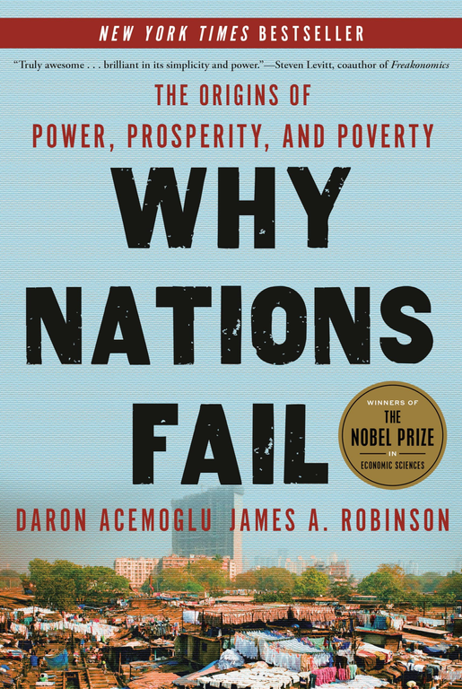
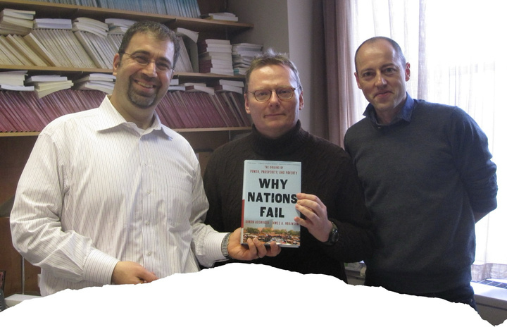
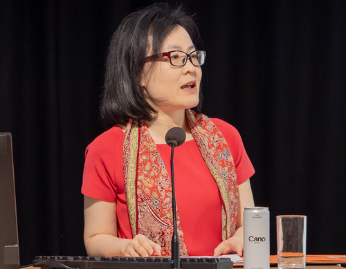

Daron Acemoglu is the son of a teacher and a lawyer, born in Kadıköy, Istanbul in 1967. His father, Kevork Acemoglu, was a valued lawyer and academician, while his mother taught school. Growing up in a household that cherished education, Acemoglu completed his primary schooling at Aramyan Uncuyan in Istanbul, then continued at Galatasaray High School. There, his curiosity about politics and economics deepened, ultimately leading him to pursue economics at the University of York in the UK. After earning his bachelor's degree in June 1989, he advanced to a master's in Econometrics and Mathematical Economics in 1990, followed by a PhD in Economics from the London School of Economics beginning in November 1992.
From LSE to MIT: Building a Career
After completing his PhD, Acemoglu taught at the London School of Economics from 1992 to 1993. Following the suggestion of a former professor, he pursued his academic career at the Massachusetts Institute of Technology, where he rose to the rank of professor in the economics department. Over decades at MIT, Acemoglu accumulated numerous international awards and honors, culminating in the 2024 Nobel Prize in Economics, which he shared with James Robinson and Simon Johnson "for studies of how institutions are formed and affect prosperity."
Acemoglu's influence extends far beyond his own research. Many of his students have become prominent economists themselves, particularly from Turkey. Among them are Professor Ufuk Akçiğit at the University of Chicago, Professor Alp Şimşek at the Yale School of Finance and Management, and Associate Professor Arda Gitmez at Bilkent University. His research spans macroeconomics, political economy, labor economics, development economics, and economic theory.
Development can only be achieved through institutionalization. — Daron Acemoglu
The Institutional Question: Why Nations Differ
For centuries, scholars have asked why some societies are more economically developed than others. Hypotheses ranging from culture and geography to literacy levels have been proposed. In their landmark work Why Nations Fail?, Acemoglu and Robinson responded to these theories through rigorous comparative analysis. Consider a town straddling the US-Mexico border: development levels differ dramatically across the border, despite no significant cultural or geographical variations. Similarly, North and South Korea share nearly identical geography and culture yet exhibit vastly different economic outcomes. These cases led Acemoglu to a pivotal conclusion: development is not a product of culture or geography, but of institutional frameworks.
The Colonial Origins Framework
Acemoglu's most cited work, "The Colonial Origins of Comparative Development: An Empirical Investigation" (2001), examines how colonial history shaped institutionalization patterns. The article argues that countries' colonial pasts laid the groundwork for their modern institutions. Countries like the USA, Canada, and Australia developed inclusive institutions partly due to European settlement patterns. However, Acemoglu does not claim that all nations with colonial histories automatically acquired good institutions. Many African countries, for example, experienced colonialism but now face serious institutional challenges.
The distinguishing factor, according to Acemoglu, is whether European settlers established permanent colonies with robust institutional infrastructure. In the US and similar nations, Europeans settled, built institutions, and encouraged investment. In contrast, European powers in most African colonies prioritized resource extraction rather than institution-building, leaving institutional legacies of extraction and inequality.

Institutions, Power, and Prosperity
Acemoglu's central insight concerns the relationship between power distribution and economic growth. When political power concentrates among a small elite, those leaders shape policy to maximize their own utility and gain, often capturing a disproportionate share of society's wealth. This dynamic drives inequality and stifles growth. Conversely, when political power is widely shared through strong democratic and institutional structures, the conditions for innovation and entrepreneurship flourish.
Acemoglu proposes that economic growth becomes possible when strong institutions exist and political power is shared across society. Shared power creates competition among firms, spurring innovation, technological adoption, and entrepreneurship. He further notes that with effective use of technologies like artificial intelligence, nations can increase productivity, create employment, and adapt renewable energy solutions within the context of climate change.
His core thesis rests on the recognition that "economic institutions shape economic incentives: the incentives to become educated, to save and invest, to innovate and adopt new technologies, and so on. It is the political process that determines what economic institutions people live under, and it is the political institutions that determine how this process works."

Intellectual Challenges and the China Question
Acemoglu's theory, while influential, has faced scholarly criticism. Yuen Yuen Ang, a professor at Johns Hopkins, presents one of the most challenging critiques. She argues that the United States, while now featuring inclusive institutions, was not so inclusive during its primary economic development period—it was marked by white male aristocracy and widespread slavery. She also criticizes Acemoglu for insufficient engagement with the Chinese example, where rapid economic growth since the 1980s has occurred despite institutions that Acemoglu characterizes as extractive rather than inclusive.
Ang points out that China, though not yet a high-income country by per capita standards, has nonetheless transformed from extreme poverty to a middle-income status—a remarkable achievement. While some economists attribute this to "catch-up advantage," the puzzle remains: why haven't all poor countries achieved similar catch-up growth? This question reveals potential limitations in purely institutional explanations and suggests the need for refined frameworks that account for such anomalies.

Legacy and Future Directions
Despite critiques, Acemoglu's institutional framework remains foundational to modern development economics. His work has influenced policy discussions worldwide and shaped how economists and policymakers think about poverty, inequality, and growth. The 2024 Nobel Prize recognition validates decades of rigorous scholarship and underscores the importance of understanding institutions as central to human flourishing.
Acemoglu's journey from Kadıköy to MIT, and his insights into why nations succeed or fail, continue to guide research into how societies can build stronger institutions, distribute power more fairly, and create environments where innovation and entrepreneurship can thrive for the benefit of all.
Selected references
- Acemoglu, D., & Robinson, J. (2012). Why Nations Fail: The Origins of Power, Prosperity, and Poverty. Crown Business.
- Acemoglu, D., Johnson, S., & Robinson, J. (2001). The Colonial Origins of Comparative Development: An Empirical Investigation. The American Economic Review, 91(5), 1369–1401.
- Avilova, T., & Goldin, C. (2024). Seeking the "Missing Women" of Economics. The Journal of Economic Perspectives, 38(3), 137–162.
- The Economist. (2024, October 14). An economics Nobel for work on why nations succeed and fail. Retrieved from https://www.economist.com